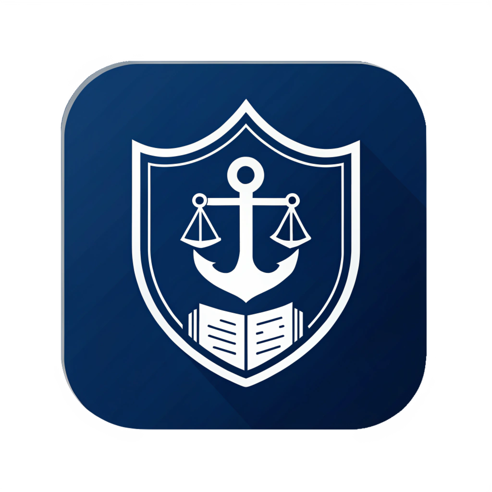

Mevzuat Asistanı
Gizlilik Politikası ve Yasal Uyarı
🔒 KİŞİSEL VERİLERİN KORUNMASI VE GİZLİLİK POLİTİKASI (KVKK)
Son Güncelleme: 01.03.2026
Mevzuat Asistanı ("Uygulama") olarak, kullanıcılarımızın güvenliğine ve kişisel verilerinin korunmasına büyük
önem veriyoruz. 6698 sayılı Kişisel Verilerin Korunması Kanunu ("KVKK") kapsamında hazırlanan bu metin,
verilerinizin nasıl işlendiğini ve korunduğunu açıklamaktadır.
1. İşlenen Kişisel Veriler
Uygulamayı kullanımınız ve kayıt süreciniz kapsamında, sadece uygulamanın temel işlevlerini yerine
getirebilmesi, kimlik doğrulaması ve sistem güvenliğinin sağlanması amacıyla kullanıcının kendi
beyanıyla aşağıdaki veriler işlenmektedir:
- Kimlik ve Mesleki Veriler: Ad, Soyad ve Statü/Unvan bilgisi (Sisteme kayıt olan kişinin
doğrulanması, yetkisiz erişimlerin tespiti ve yetkilendirme süreçleri için).
- İletişim Verileri: E-posta adresi ve Cep Telefonu Numarası (Hesap onayı, şifre
işlemleri, zorunlu sistem bildirimleri, acil iletişim ve destek taleplerinin takibi için).
- Cihaz ve İşlem Güvenliği Verileri: IP adresi, Kullanılan İşletim Sistemi (Platform:
iOS/Android), Cihaz Modeli, Benzersiz Cihaz Kimliği (Device ID) ve uygulama giriş-çıkış logları (Aynı
anda tek cihazdan girilmesini sağlamak, hesap çalınmalarını önlemek ve siber güvenliği sağlamak için).
- Kullanım Verileri: Yapay zeka asistanı ile yapılan sohbet komutları, favoriye eklenen
dokümanlar.
- Lokasyon (Konum) Verisi: Harita/Koordinat modüllerinin çalışması için kullanılan konum
verisi. Bu veri sunucularımızda saklanmaz, sadece anlık işlem için cihazınızda kullanılır.
- Finansal Veriler: Kredi kartı bilgileriniz Google Play veya App Store altyapısında
işlenir; tarafımızca görülmez ve saklanmaz.
2. Kişisel Verilerin İşlenme Amaçları ve Hukuki Sebepleri
Toplanan kişisel verileriniz, 6698 sayılı KVKK maddelerine dayanılarak, tamamen kullanıcının açık
rızasıyla ve kendi beyanı esas alınarak şu sınırlı amaçlarla işlenmektedir:
- Uygulamanın yasadışı amaçlarla veya yetkisiz/bilinmeyen kişilerce kullanımını engellemek için
kimlik, statü ve cihaz doğrulaması yapmak.
- Olağandışı durumlarda, güncelleme süreçlerinde veya onay aşamalarında kullanıcı ile doğrudan
iletişime geçmek.
- Suni zeka hizmetinin düzgün çalışmasını sağlamak, olası kötüye kullanımları loglamak.
- Yasal Güvence: Toplanan isim, telefon, e-posta ve rütbe/statü bilgileri kesinlikle
ticari amaçlarla (reklam, pazarlama vb.) kullanılmaz ve üçüncü parti reklam verenlerle paylaşılamaz. Bu
verilerin toplanmasındaki yegane amaç; kapalı devre bir sistem olan bu uygulamanın ve kullanıcılarının
güvenliğini tesis etmektir.
3. Verilerin Aktarımı ve Saklanması
Uygulamamız bulut tabanlı modern teknolojiler kullanmaktadır.
- Veritabanı Hizmeti: Kullanıcı verileri, Supabase tarafından sağlanan
güvenli sunucularda şifreli olarak saklanmaktadır.
- Yapay Zeka Hizmeti: Asistana sorduğunuz sorular, cevap üretilebilmesi için
Google Cloud (Gemini API) sunucularına iletilir ve işlenir.
- Yurt Dışı Aktarım: Kullandığımız altyapı sağlayıcıların sunucuları yurt dışında
bulunabilir. Hizmeti kullanarak, verilerinizin hizmetin ifası gereği yurt dışındaki güvenli sunucularda
işlenmesine açık rıza göstermiş sayılırsınız.
⚠️ ÖNEMLİ UYARI: Hassas ve Gizli Veriler
Bu uygulama genel kullanıma açık bir ağ üzerinde çalışmaktadır. LÜTFEN DİKKAT: Yapay
zeka asistanı ile yaptığınız yazışmalarda veya aldığınız notlarda;
- "GİZLİ", "HİZMETE ÖZEL" veya "ÇOK GİZLİ" dereceli
askeri bilgileri/belgeleri,
- İstihbarat niteliği taşıyan verileri,
- Üçüncü şahıslara ait hassas kişisel verileri (Sağlık, Biyometrik vb.)
KESİNLİKLE PAYLAŞMAYINIZ. Kullanıcının sisteme kendi iradesiyle girdiği, mevzuata aykırı
veya gizlilik dereceli verilerden doğacak sorumluluk tamamen kullanıcıya aittir.
4. İlgili Kişi Olarak Haklarınız
KVKK’nın 11. maddesi uyarınca veri sahibi olarak haklarınız saklıdır. Bu haklarınızı kullanmak için uygulama
içerisindeki "Destek Talebi Oluştur" menüsünü kullanabilir veya okincepeapp@gmail.com adresine e-posta
gönderebilirsiniz. Kullanıcı uygulama içerisinden "Hesabımı Sil" işlemini gerçekleştirdiğinde,
sistemdeki tüm kişisel verileri kalıcı olarak silinir.
⚠️ YASAL UYARI VE SORUMLULUK REDDİ (DISCLAIMER)
1. Uygulamanın Niteliği
"Mevzuat Asistanı" mobil uygulaması, Sahil Güvenlik personeli, kolluk kuvvetleri ve denizciler için bir
"Karar Destek Sistemi" ve yardımcı kaynak olarak geliştirilmiştir. Bu uygulama, resmi bir
tebliğ aracı, kanun hükmünde kararname veya emir niteliği TAŞIMAZ.
2. İçerik ve Doğruluk
Uygulama içerisinde sunulan kanun maddeleri, yönetmelikler, hesaplamalar ve yapay zeka analizleri
bilgilendirme amacı taşır. Geliştirici, sunulan bilgilerin anlık doğruluğunu garanti etmez. Kullanıcılar,
resmi işlem yapmadan önce bilgiyi Resmi Gazete veya asıl kaynağından teyit etmekle
yükümlüdür.
3. Yapay Zeka (AI) Kullanımı
Uygulamada kullanılan yapay zeka asistanı, istatistiksel dil modelleri tabanlıdır ve nadiren de olsa yanlış
bilgi üretebilir ("halüsinasyon"). Asistanın verdiği cevaplar hukuki mütalaa (görüş) yerine geçmez, sadece
tavsiye niteliğindedir.
4. Sorumluluk Reddi
Mevzuat Asistanı uygulamasının kullanımından veya içerikteki olası hatalardan kaynaklanabilecek doğrudan veya
dolaylı maddi/manevi zararlardan, uygulama geliştiricisi ve sağlayıcıları sorumlu
tutulamaz.